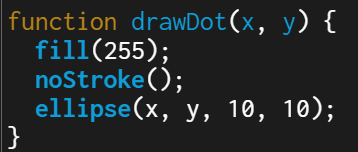
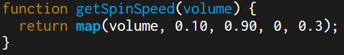

Spring Dev Project - Vinyl
Description
We created this project to combine our interest in music with interactivity to make it as engaging as possible. We were curious about interactivity, so, with the help of AI, we made the project react to the user's voice. We also added popular album covers in the background to appeal to an audience interested in music, just like us. The purpose of this project was for us to explore each other's interests, find something in common, and create something fun through teamwork.
Instructions
Make some noise! You will notice that the louder you are, the faster the record spins and the higher the progress bar goes. The progress bar is the most sensitive to your voice compareed to the record. Beneath the progress bar, click on the fast forward button to switch through different album covers.
Learning Goal
We wanted to introduce something that hasn't been seen in the classroom before. We decided to include mic frequency controlled aspects into the project, which we thought would make it unique. By doing this, we hope you learn how to add a mic into your future projects so that they can be more interactive.
Method That Takes a Perameter

This function takes x and y perameters, and based on those peramters, draws dots at that location. This method is used when drawing the vinyl; the dots are placed in four different locations to make it clear that the vinyl is spinning. Otherwise, since the vinyl is a cirle, it won't be so clear that it is spinning. This is also used for the progress bar beneath the vinyl.
Method That Returns a Value

This function calculates the vinyl spin speed based on the mic's volume. The calculation is performed by taking the volume value, coverting it from the microphone range (0.10-0.90) into a spin speed range (0-0.3). The result is returned to where the method is being called in draw, just before the vinyl is actually created.
LLM Assistance
During the brainstorming phase of the project, we asked Gemini to create a simple, interactive project in p5js based on music. The result was waves that would spike up based on the user's microphone. So, we decided to keep the mic part. We were ready to bring our idea to life, but there was one problem: we didn't know how to code with p5js. There wasn't enough time to learn the basics of p5js. So, with the help of Gemini again, we were able to create our project without having to go through so much trouble. It even added the progress bar, which was something we hadn't considered before. LLM assistance allowed our project to be interactive.